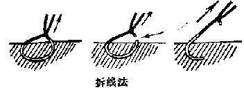

1.换药、拔管，外科基本操作（切开、缝合、打结、止血）
- 1.
换药与拆线

- 1.
- 2.
物品准备：换药包(换药碗 2 个，有齿镊、无齿镊各一把)、胶带、酒精棉球、卵圆钳、线剪
- 3.
换药操作步骤
步骤 注意事项 1.换药前操作者洗手，戴好帽子、口罩 头发、鼻孔不外露 2.检查物品是否备齐，是否在保质期内 3.手消毒后，上前核对病人信息，嘱病人做好换药准备，观察病人伤口 ① 换药可能会有些痛、有任何不适可以和我说
② 观察后盖好衣服
③I 类伤口无需揭开纱布4.手消毒后，打开换药包，使用卵圆钳摆好纱布，放入镊子，放入酒精棉球（3～5 个） ① 注意无菌操作
② 一个弯盘放操作台，另一个放床旁（放污物），有菌物品不能在无菌物品上方跨过5.与病人交流后，打开病人衣服。揭开胶布， 用手缓慢移去外层敷料，用无齿镊轻轻揭去内层敷料 将污染敷料内面向上，放在弯盘内 6.使用有齿镊传递酒精棉球到无齿镊，由内向外消毒伤口 3 遍（3～5cm） ① 保持颞子头向下
② 无齿镊直接用于接触伤口，有齿镊专门用于传递换药碗中的物品，不能混用
③ 因为刺激性太大，酒精棉球只能擦拭皮肤；擦拭伤口使用生理盐水棉球7.使用有齿镊传递敷料到无齿镊，覆盖伤口（8~16 层） ①
② 敷料覆盖后两个镊子不应放到一起，防止操作过程中敷料掉落无镊子可用8.贴胶布，固定敷料 贴胶布方向应与肢体或躯干长轴垂直 9.协助患者取舒适卧位，整理床面（交代拆线后注意事项） 10.整理台面，换药污物放入污物桶内，再次洗手 - 4.
拆线操作步骤（6 步后插入下面两步）
步骤 注意事项 1.考生左手用无齿镊轻提缝线的线头，使埋于皮肤的缝线露出少许，右手用线剪紧贴皮肤将新露出的缝线剪断，左手顺原缝线方向轻轻抽出缝线 剪线部位不应在缝合线的中间
2.检查伤口愈合情况，用腆伏棉球再次消毒皮肤 1 遍
- 2.
切开 + 缝合 + 打结